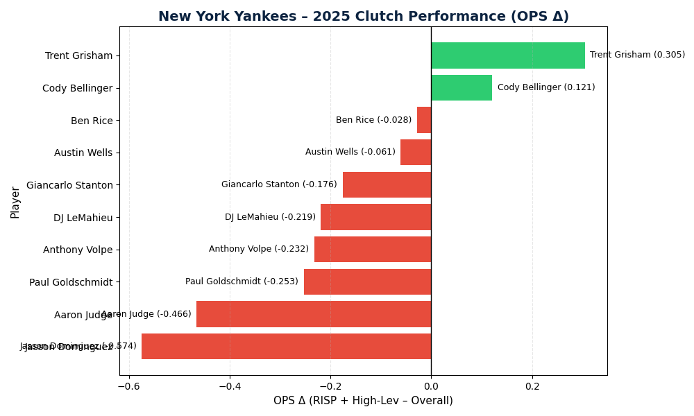

2025 RISP + High-Leverage OPS
Comparing clutch vs overall OPS across MLB hitters.
View Analysis →
2024–2025 Stolen Base Trends
Tracking year-over-year changes in MLB stolen-base totals.
View Analysis →
Friday vs Sunday Hitting Analysis
Comparing OPS distributions and player performance across game days.
View Analysis →